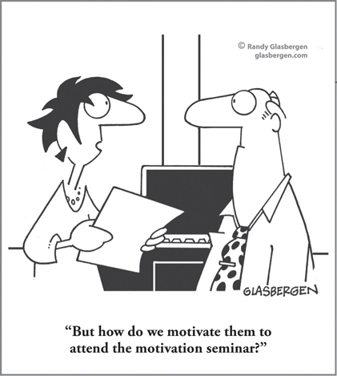

CHAPTER 11
Growing Yourself and Others: Developing, Coaching, and Mentoring with Thinking and Learning in Mind

CHAPTER HIGHLIGHTS
 Understanding how you prefer to learn and think allows you to take control of your own growth and development.
Understanding how you prefer to learn and think allows you to take control of your own growth and development.
 Managers need to understand how their employees learn and think to support their development effectively.
Managers need to understand how their employees learn and think to support their development effectively.
 Groups of almost any size represent an array of different thinking and subsequent learning preferences—difference is the norm.
Groups of almost any size represent an array of different thinking and subsequent learning preferences—difference is the norm.
 Learning preferences and learning avoidances are both of key importance in development.
Learning preferences and learning avoidances are both of key importance in development.
It was an interesting group—all headmasters of private schools from a region in the Southeast, gathered together to talk about improving overall student performance. But I could tell that one of the headmasters was distracted; his facial expressions and fidgeting were becoming harder and harder to ignore. So I decided I would take a moment to confer with him at the next break.
In the meantime, I introduced the next activity, one that involved using a metaphor. Suddenly this headmaster stood up and declared emphatically to the group: “Excuse me, excuse me. I don’t ‘do’ metaphors.” His intolerance for this activity that he clearly disliked—metaphors—was so strong that, even before experiencing it, he felt it necessary to stop the program!
Have you ever been to or participated in a training program, online learning, or any other sort of educational event that you absolutely hated? Maybe you were bored because to you, it felt like a one-way lecture, or you thought the activities were too touchy-feely or boringly predictable. Or perhaps you were annoyed by the lack of structure and no clear agenda because it was so hard to follow the instructor’s train of thought. But then after the program was over, you discovered that some of your fellow participants had absolutely loved it. They felt it was one of the best learning programs they’d ever been to. You couldn’t believe it. How could they possibly have learned anything from that terrible program?
In the same way that we have built patterns of preference over the course of our lives as thinkers, each one of us as a learner is a unique human being with a unique learning preference. As a student, you probably did much better in some subjects than in others and responded much more favorably to some teachers and teaching methods than to others. Think of the teachers and content that you can still remember today—years later—and then try to recall those that were lost almost immediately after the learning. Our research has shown that you probably retained some material more accurately and for a longer period of time than other material that was delivered in a different way. Our unique learning preferences are the result of the brains we were born with, combined with the years of experience that have developed into our own distinctive learning approaches over the course of our lives.
The first application of my study of the brain and the evolving theory of Whole Brain Thinking was in the domain of management education at GE’s management education complex at Crotonville. The more I learned about the role of the brain in the learning process, the more curious and skeptical I became about the effectiveness of the programs I was involved with. To satisfy my curiosity, I began to evaluate the programs I was responsible for on the basis of what the participants actually learned and whether they learned what they were intended to learn. The study revealed that what the participants actually learned covered a wide spectrum within a course, even with a participant group of only 20 people. The study further revealed that less than half of that learning was the learning that was actually intended by the training program. This information was so shocking that I decided I could not report it to upper management without offering specific ways to correct the situation.
Further inquiry into the participants’ learning preferences revealed a wide range, with several significant subgroups showing similar learning preferences.
Next, I diagnosed the faculty members and discovered that they too had strong personal learning preferences. My curiosity then led me to examine the design of the various courses that were being taught. I discovered that these were rather narrow in terms of the design methods used, and that they also seemed to match the learning preferences of the course leaders. No wonder we were having problems! The course design and the course leaders seemed to be in good alignment, but this was, in turn, in good alignment with only part of the class, perhaps as few as half. This meant that as many as half of the participants were so out of alignment with the course material and the course leaders that they were missing much of what they were intended to take back to their jobs.
In today’s world, learning is no longer relegated exclusively to the training department. The advent of coaching and mentoring, “leader as teacher,” and other initiatives have put managers and leaders squarely in the role of not just manager or leader, but also developer. The implications of these differences in learning preferences thus affect everyone—for each person’s own development and the development of others.
My research has not only shown that the business world, or any large organization taken as a whole, represents a composite array of thinking preferences that are equally distributed across the Whole Brain Model, but that the same is true for learning. In other words, there is a balanced distribution of learning preferences, with each quadrant and each mode being equally represented and seeking a particular learning approach. But that’s not all. There is also an equal distribution of learning avoidances across the four quadrants. And learning avoidances are even more significant than learning preferences because they cause people to tune out, just as the headmaster did with metaphors. Whether it is a learning, coaching, or mentoring program, a tuned-out learner is a waste of educational time and effort as well as corporate time and money.
The Impact of Design and Delivery on the Learning Outcome
Training and development budgets range from thousands to millions or even billions of dollars annually. Coaching and mentoring programs are now standard in most organizations. Much of this time, effort, and money may be wasted because people are expected to participate and learn in programs that are out of alignment with their learning preferences, out of alignment with their job needs, and out of alignment with their career paths. The degree of match between the learner and the development content, the way the learner learns best, and the mode of delivery are all critical considerations for achieving desired learning outcomes. If we fail to take them into account, the learner’s engagement and attention can be affected, and he or she will fail to build the expected skills or competencies. At best, the outcomes will be temporary. My experience tells me that at least half of those attending in-house training programs or participating in coaching or mentoring programs are seriously out of alignment in one or more of these specific measures (see Figure 11-1).
FIGURE 11-1 A Whole Brain group receiving intended learning through a Whole Brain design, compared with a delivery that addresses only left-mode preferences.
The alignment issue exists in programs in schools and universities as well. How many classes did you tune out of when you were in school? Our partner, Ann Louise de Boer, has conducted extensive research at the University of Pretoria that demonstrates how a Whole Brain Learning redesign improves learning outcomes in higher education. The research has looked at a range of learning challenges, documenting successful application of the approach in a variety of areas. In one example, grades in the School of Dentistry improved by 30 percent after the tooth morphology class was transformed. Ann and her team have qualitative and quantitative research showing how results will improve once alignment has been established. Other programs and results highlighted in their book, Whole Brain Learning in Higher Education: Evidence-Based Practices,1 include engineering, information literacy, library leadership, management, and many others. Alignment clearly matters, and the team’s ongoing research continues to substantiate this.
The implications for those of us who are managers, coaches, and mentors are significant. I believe that an understanding of thinking and learning styles matters both on a personal development level and in our responsibilities to grow those employees who report to us. Learning happens every day on the job, and understanding the way people learn is just as important as understanding how they think.
Growing Yourself: Own Your Learning
Think back to the last time you were fully engaged by a learning experience. Did it involve uncovering the facts, analyzing issues, and forming theories? Or maybe you had the opportunity to do hands-on practice: testing things out, following a clear, structured process. Perhaps you were working in a group, either face to face or online, listening and sharing ideas. Or were you experimenting with new concepts and ideas and growing through self-discovery? Once you understand how you prefer to learn, you can begin to take better control of your own growth and development.
How Our Preferences Affect Learning
Remember the headmaster who declared that he did not “do metaphors”? That comment affected the way I handled the metaphor activity. I explained the rationale and the process we would use, as well as the intended outcome, so that he would buy into it and participate, and he did. When you’ve felt like tuning out, have you provided feedback or asked for alternative ways to access the content? Next time, consider asking for what you need and selecting programs that best represent your preferred approach so that you can get the most out of the experience. When you do not have a choice or are intentionally seeking a challenge, approach the learning experience as you would a new adventure, well rested and with a stretch mindset, knowing that it will take a lot more energy—and consider finding a learning partner you can work with to help.
People tend to assume that what works for them will also work for others, unless they know otherwise, so if you are learning in a coaching or mentoring situation, don’t be afraid to ask for what you need. Most coaches and mentors will be very happy to help. After all, they want to make sure that their time and effort are not wasted!
Now let me be clear: understanding your learning preferences isn’t about getting a free pass to check out when learning isn’t aligned with your preferences. It’s about recognizing when you might become disengaged and stretching yourself so that you can get the learning you need. You have access to all of these modes—you just need to find ways to make them work for you.
How does your learning mindset affect the way you learn? Significantly! Carol Dweck’s research at Stanford University found that people who believe that their brain and intelligence can be “built” like a muscle (a growth mind-set) will learn more effectively; those who do not believe that their brain can be built, that we are born with our intelligence “fixed” (a fixed mindset) will struggle. So we know that a growth mindset is critical in order to engage in the learning and to achieve learning outcomes.3 The very premise of Whole Brain Thinking substantiates this idea of a growth mindset. This, combined with the effective application of learning preferences to the learning process, can help instill that growth mindset. As a learner, you must first understand and believe that you can stretch your personal preferences and not get boxed in by your preferred modes or use them as an excuse to disengage. You most likely have a long list of examples where that has occurred already in your lifetime. When you recognize and accept that you have the ability to think and learn beyond your preferences, you can “own” your learning, find the motivation, take responsibility for your success, and get support to better meet your needs.
Growing Others
One of the roles we have as managers and leaders is to support our employees in their development. Even those who don’t have people management responsibilities are often called upon, either by the organization or by an individual, to serve as a mentor to someone who is growing in his or her role. No matter what the circumstances, one thing is clear: when you understand how people think and learn, you can make faster connections and cut through the noise so that you can focus on what really matters.
Think about the most effective coaches and mentors you’ve had throughout your career. One of the first things you may have recognized is that they really seem to “get” you, to understand you and know what you care about. Lewis Lubin,4 an executive coach who uses the HBDI in his practice, calls this a process of finding the “chemistry of compatibility.” It’s the homework he does before beginning a coaching engagement so that he can gain some insights into how the person prefers to think and learn. This gives him a starting point for connecting with the individual in an authentic way, drawing in thinking preferences to find a shared comfort zone of language. By speaking from the mindset that connects best, he’s able to ensure that both he and the person he’s coaching are really hearing each other.
Thinking and learning preferences can also become the springboard for discussions with employees about how they can use their preferences more deliberately, and stretch to other quadrants beyond their preferences to meet specific competency requirements. If their developmental goals require them to be more strategic and holistic in their perspective, for example, how might they use Whole Brain Thinking to move out of their comfort zones and see beyond their blind spots?
Regardless of your thinking and learning preferences, all approaches across the Whole Brain Model are important and valid, which is why the most successful coaches have the thinking agility to move beyond their own comfort zones and filters. As Lewis says, it’s not about being a chameleon or changing who you are; it’s about adapting and being flexible to meet those you coach or your employees where they think (see Figure 11-3).
FIGURE 11-3 Coaching the Whole Brain way: For best results, coaches must spend time in each of the four thinking quadrants. Here’s a Whole Brain checklist to get you started.
Everyday Learning with Thinking in Mind
For everyone, especially adults, learning takes energy, focus, and motivation. The way our society works today, there is a general avoidance of discomfort, with a strong desire to make things easier and more convenient. The discomfort created by the need to process new information or change the way you think is often a deterrent. Yet as my friend and HBDI practitioner Manny Elkind,6 president and owner of Mindtech, Inc., once pointed out, “In many cases, if you are not somewhat uncomfortable, then you are probably not learning!”
In spite of 100 years of dogma saying otherwise, we now know that new neuronal connections can be created, even in the adult brain. Whether you are the learner or you need to help others learn and grow, the research has shown that context, emotional engagement, novelty, meaty challenges, sleep, planning for processing over time, and practice are all essential to making sure that the learning gets through and sticks. When you prepare your brain for learning, you will be more mentally prepared for the challenge. You may still not “like” the discomfort that a stretch may require, but you can own the challenge and view learning as a victory.
And that’s important, because in today’s world, learning isn’t a choice; it’s a necessity if you want to keep up with the pace of change around you. One of the ways you can grow and adapt is to practice accessing and developing your less-preferred modes. The following chart provides a sampling of four types of everyday activities that, through regular practice, will help establish and reinforce a more whole-brained, personal approach to work and life in general. It’s your brain; for best results, use it daily!
A Program for Exercising All Four Quadrants
Building situational capability in each quadrant is like building a muscle; it requires regular practice doing quadrant-specific activities on a consistent basis. In this section, you will find a sampling of everyday activities that, if practiced regularly, will help you establish and reinforce a more whole-brained, personal approach to work and life in general. Modify, adapt, or change the activities as required.
Select a quadrant that you want to be more proficient in, and either pick one activity a day or repeat one until you feel that you’ve “got it,” then move to another. Overachievers might try to do one from each quadrant every day!
Do you want to exercise your logical thinking? Your process orientation? How about your kinesthetic or risk-taking abilities? Go to www.wholebrainbusinessbook.com to download the full seven-day program with plenty of quadrant-specific activities to choose from to build your Whole Brain Thinking muscles.
SO WHAT?
 You need to understand how you think and learn so that you can “own” your growth and development.
You need to understand how you think and learn so that you can “own” your growth and development.
 It is critical to rethink many of the traditional approaches to the design and delivery of intended business learning; they are often ineffective and thus extremely costly because much of the investment of time and money is wasted.
It is critical to rethink many of the traditional approaches to the design and delivery of intended business learning; they are often ineffective and thus extremely costly because much of the investment of time and money is wasted.
 By aligning their programs using a Whole Brain Learning approach that designs learning with the learner in mind, schools and universities can significantly improve learner outcomes.
By aligning their programs using a Whole Brain Learning approach that designs learning with the learner in mind, schools and universities can significantly improve learner outcomes.
 The best coaching and mentoring results start with an understanding of and ability to adapt to the person’s thinking and learning preferences so that you can quickly connect and both parties will be heard.
The best coaching and mentoring results start with an understanding of and ability to adapt to the person’s thinking and learning preferences so that you can quickly connect and both parties will be heard.
 Whole Brain Thinking helps you, and those you are responsible for developing, break out of mental comfort zones to reach new competency levels.
Whole Brain Thinking helps you, and those you are responsible for developing, break out of mental comfort zones to reach new competency levels.
 To keep growing and learning, exercise all four quadrants regularly—ideally, every day.
To keep growing and learning, exercise all four quadrants regularly—ideally, every day.